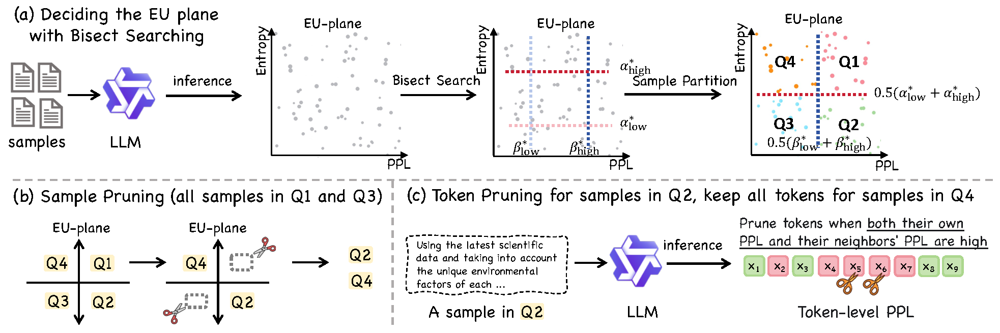

TL;DR: As supervised fine-tuning (SFT) evolves from a lightweight post-training step into a compute-intensive phase rivaling mid-training in scale, data efficiency has become critical for aligning large language models (LLMs) under tight budgets. Existing data pruning methods suffer from a fragmented design: they operate either at the sample level or the token level in isolation, failing to jointly optimize both dimensions. This disconnect leads to significant inefficiencies—high-value samples may still contain redundant tokens, while token-level pruning often discards crucial instructional or corrective signals embedded in individual examples. To address this bottleneck, we introduce the Error–Uncertainty (EU) Plane, a diagnostic framework that jointly characterizes the heterogeneous utility of training data across samples and tokens. Guided by this insight, we propose Quadrant-based Tuning (Q-Tuning), a unified framework that strategically coordinates sample pruning and token pruning. Q-Tuning employs a two-stage strategy: first, it performs sample-level triage to retain examples rich in informative misconceptions or calibration signals; second, it applies an asymmetric token-pruning policy, using a context-aware scoring mechanism to trim less salient tokens exclusively from misconception samples while preserving calibration samples in their entirety. Our method sets a new state of the art across five diverse benchmarks. Remarkably, on SmolLM2-1.7B, Q-Tuning achieves a +38% average improvement over the full-data SFT baseline using only 12.5% of the original training data. As the first dynamic pruning approach to consistently outperform full-data training, Q-Tuning provides a practical and scalable blueprint for maximizing data utilization in budget-constrained LLM SFT.
Generalized Dynamic Data Pruning. We formalize the joint sample-token pruning problem through the Generalized Dynamic Data Pruning framework — a bilevel optimization objective for hybrid pruning strategies.
Error-Uncertainty (EU) Plane. We introduce the Error-Uncertainty (EU) Plane, a diagnostic tool that quantifies and explains why naive pruning heuristics fail, revealing the heterogeneous value of data across error and uncertainty dimensions.
Q-Tuning. We propose Q-Tuning, the first integrated, diagnosis-driven algorithm for dynamic pruning that coordinates sample and token decisions based on EU Plane insights.

The Error-Uncertainty (EU) Plane is a diagnostic tool used to categorize each training sample based on two orthogonal metrics. The first axis is error, quantified by perplexity ($\mathrm{PPL}$), which measures how surprising a ground-truth sequence is to the model. A high $\mathrm{PPL}$ suggests the model finds the data difficult or has a misconception. The formula is:
\[ \mathrm{PPL}(x,y;f_\theta)=\exp\Bigg(\frac{\sum_{i\in T(x)} -\log p(y_i\mid x,y_{<i};f_\theta)}{|T(x)|}\Bigg) \]
The second axis is uncertainty, quantified by predictive entropy ($\mathrm{Ent}$), which measures the model's indecision or how broadly it distributes its probability predictions, regardless of correctness. The formula is:
\[ \mathrm{Ent}(x,y;f_\theta)=\frac{\sum_{i\in T(x,y)}\Big(-\sum_{v\in\mathcal V}p(v\mid x,y_{<i};f_\theta)\log p(v\mid x,y_{<i};f_\theta)\Big)}{|T(x)|} \]
By plotting each sample on this plane, the data is partitioned into four distinct quadrants, enabling a principled approach to data pruning.
Sample-level pruning is the first stage of the Q-Tuning method, which operates on the entire training batch. Using the EU Plane coordinates for each sample, this stage aims to discard uninformative data points entirely. Specifically, it discards samples that fall into the "Harmful Noise" (high error, low uncertainty) and "Redundant Knowledge" (low error, low uncertainty) quadrants. To achieve a target sample retention ratio, $r_{\text{sample}}$, a bisect search algorithm dynamically determines the quantile thresholds for perplexity and entropy that correctly partition the batch. Only samples identified as "Valuable Misconceptions" (high error, low uncertainty) and "Calibration Data" (high error, high uncertainty) are kept for the next stage of processing.
Token-level pruning is the second, more granular stage that is selectively applied only to the samples classified as "Valuable Misconceptions" (Q2) from the previous stage. The goal is to isolate the useful learning signal within these samples by removing locally detrimental or noisy tokens. For each token, a smoothed importance score, $s_i$, is calculated, which considers both the token's own perplexity and that of its immediate neighbors, preventing the accidental removal of critical tokens that have isolated perplexity spikes. The formula is: $$s_i(x,y;f_\theta)=(1-\lambda)\,\mathrm{PPL}_i(x,y;f_\theta)+\lambda\big[\mathrm{PPL}_{i-1}(x,y;f_\theta)+\mathrm{PPL}_{i+1}(x,y;f_\theta)\big]$$ Tokens are then ranked by this score, and only the top-$r_{\textrm{token}}$ fraction are retained for the training update. Samples classified as "Calibration Data" (Q4) are exempt from this process and are preserved in their entirety.
bibtex